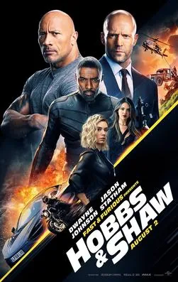

The genetics
Genetics plays a background role in this action film. Its MacGuffin is Snowflake, an engineered, programmable virus capable of killing on a massive scale, and the stakes come from the fact that it has been injected into Hattie's body and must be removed before it activates. The scientist who created it, Professor Andreiko, is portrayed as an idealist who designed the technology to deliver vaccines, only to see it taken over by a terrorist organisation that also enhances its soldiers with cybernetics. The film therefore uses a familiar theme of dual-use research, in which a medical tool becomes a weapon, without exploring the science. Viruses really are used as vehicles for medicine: viral vector vaccines, such as the Oxford–AstraZeneca vaccine for COVID-19 and some Ebola vaccines, use modified viruses to deliver genetic material into cells. A virus that could be programmed to kill selectively and extracted intact from a body, however, belongs to fiction.
The story
In London, the MI6 agent Hattie Shaw recovers "Snowflake", a programmable supervirus, from Eteon, a techno-terrorist organisation. Ambushed by Brixton Lore, a former MI6 agent enhanced with cybernetic implants, she injects herself with the only dose and escapes, and Brixton frames her for stealing it. Luke Hobbs, a former American federal agent, and Deckard Shaw, Hattie's older brother and Hobbs's old rival, are made to work together to find the virus. They learn from its creator, Professor Andreiko, that he designed it to deliver vaccines, and that unless it is extracted from Hattie with a device kept at Eteon's base in Chernobyl, Eteon can use it to wipe out humanity. They steal the damaged device, but Brixton kills Andreiko. Hobbs takes them to his estranged family in Samoa, where his brother repairs the device, and with the islanders' help they defeat Brixton's forces and extract the virus from Hattie.